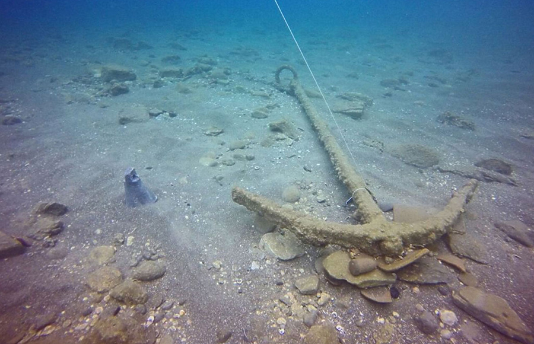
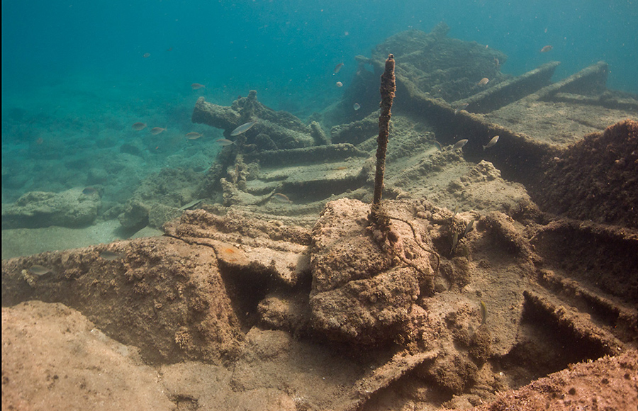
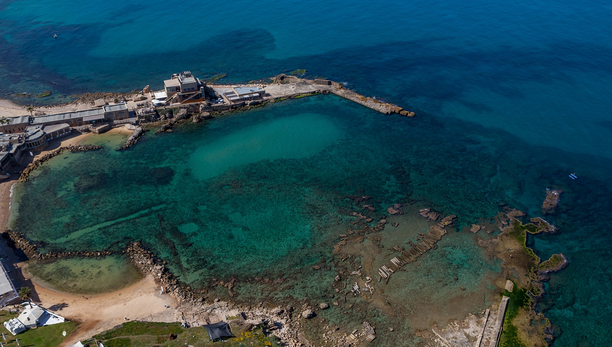

Old Caesaria archeological park
 Once the provincial capital of Roman Judea, Caesarea and its ancient deep-water port are filled with beautifully reconstructed ruins, including the famous colosseum and aqueduct.
The city’s Underwater Archaeological Park lets divers view the site from an entirely different perspective. Four different tracks and underwater experiencesexplore the original pillars, structures, giant anchoring rocks, and other bits and pieces of the lost empire lying beneath the surface.